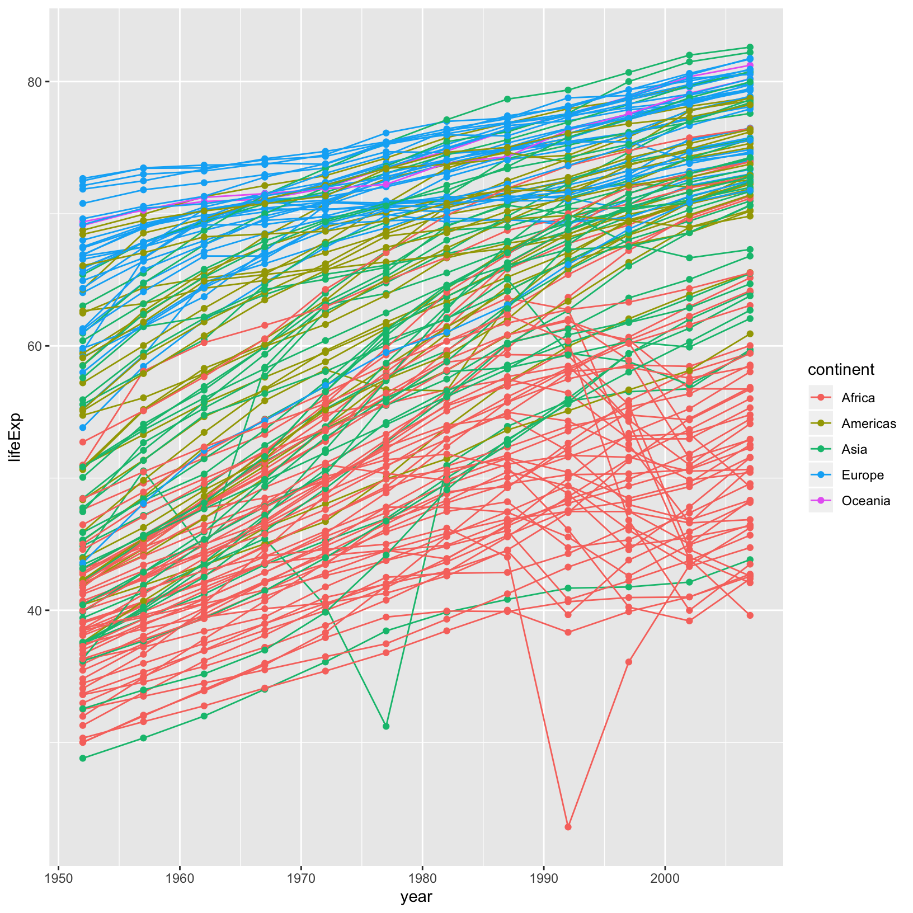

Introduction to Data Science using R Workshop
2019-09-30
0.1 Motivation
Science is a multi-step process: once you’ve designed an experiment and collected data, the real fun begins! This lesson will teach you how to start this process using R and RStudio. We will begin with raw data, perform exploratory analyses, and learn how to plot results graphically. This example starts with a dataset from gapminder.org containing population information for many countries through time. Can you read the data into R? Can you plot the population for Senegal? Can you calculate the average income for countries on the continent of Asia? By the end of these lessons you will be able to do things like plot the populations for all of these countries in under a minute!
0.2 Before Starting The Workshop
Please ensure you have the latest version of R and RStudio installed on your machine. This is important, as some packages used in the workshop may not install correctly (or at all) if R is not up to date.
Download and install the latest version of R here Download and install RStudio here
0.3 Introduction to RStudio
Welcome to the R portion of the Software Carpentry workshop.
Throughout this lesson, we’re going to teach you some of the fundamentals of the R language as well as some best practices for organizing code for scientific projects that will make your life easier.
We’ll be using RStudio: a free, open source R integrated development environment. It provides a built in editor, works on all platforms (including on servers) and provides many advantages such as integration with version control and project management.
Basic layout
When you first open RStudio, you will be greeted by three panels:
- The interactive R console (entire left)
- Environment/History (tabbed in upper right)
- Files/Plots/Packages/Help/Viewer (tabbed in lower right)

RStudio layout
Once you open files, such as R scripts, an editor panel will also open in the top left.

RStudio layout with .R file open
0.4 Work flow within RStudio
There are two main ways one can work within RStudio.
- Test and play within the interactive R console then copy code into
a .R file to run later.
- This works well when doing small tests and initially starting off.
- It quickly becomes laborious
- Start writing in an .R file and use RStudio’s short cut keys for the Run command
to push the current line, selected lines or modified lines to the
interactive R console.
- This is a great way to start; all your code is saved for later
- You will be able to run the file you create from within RStudio
or using R’s
source()function.
0.4 Tip: Running segments of your code
RStudio offers you great flexibility in running code from within the editor window. There are buttons, menu choices, and keyboard shortcuts. To run the current line, you can 1. click on the
Runbutton above the editor panel, or 2. select “Run Lines” from the “Code” menu, or 3. hit Ctrl+Return in Windows or Linux or ⌘+Return on OS X. (This shortcut can also be seen by hovering the mouse over the button). To run a block of code, select it and thenRun. If you have modified a line of code within a block of code you have just run, there is no need to reselect the section andRun, you can use the next button along,Re-run the previous region. This will run the previous code block including the modifications you have made.
0.5 Introduction to R
Much of your time in R will be spent in the R interactive
console. This is where you will run all of your code, and can be a
useful environment to try out ideas before adding them to an R script
file. This console in RStudio is the same as the one you would get if
you typed in R in your command-line environment.
The first thing you will see in the R interactive session is a bunch of information, followed by a “>” and a blinking cursor. In many ways this is similar to the shell environment you learned about during the shell lessons: it operates on the same idea of a “Read, evaluate, print loop”: you type in commands, R tries to execute them, and then returns a result.
0.6 Using R as a calculator
The simplest thing you could do with R is do arithmetic:
[1] 101And R will print out the answer, with a preceding “[1]”. Don’t worry about this for now, we’ll explain that later. For now think of it as indicating output.
Like bash, if you type in an incomplete command, R will wait for you to complete it:
> 1 ++Any time you hit return and the R session shows a “+” instead of a “>”, it means it’s waiting for you to complete the command. If you want to cancel a command you can simply hit “Esc” and RStudio will give you back the “>” prompt.
0.6 Tip: Cancelling commands
If you’re using R from the commandline instead of from within RStudio, you need to use Ctrl+C instead of Esc to cancel the command. This applies to Mac users as well!
Cancelling a command isn’t only useful for killing incomplete commands: you can also use it to tell R to stop running code (for example if it’s taking much longer than you expect), or to get rid of the code you’re currently writing.
When using R as a calculator, the order of operations is the same as you would have learned back in school.
From highest to lowest precedence:
- Parentheses:
(,) - Exponents:
^or** - Divide:
/ - Multiply:
* - Add:
+ - Subtract:
-
[1] 13Use parentheses to group operations in order to force the order of evaluation if it differs from the default, or to make clear what you intend.
[1] 16This can get unwieldy when not needed, but clarifies your intentions. Remember that others may later read your code.
(3 + (5 * (2 ^ 2))) # hard to read
3 + 5 * 2 ^ 2 # clear, if you remember the rules
3 + 5 * (2 ^ 2) # if you forget some rules, this might helpThe text after each line of code is called a
“comment”. Anything that follows after the hash (or octothorpe) symbol
# is ignored by R when it executes code.
Really small or large numbers get a scientific notation:
[1] 2e-04Which is shorthand for “multiplied by 10^XX”. So 2e-4
is shorthand for 2 * 10^(-4).
You can write numbers in scientific notation too:
[1] 50000.7 Mathematical functions
R has many built in mathematical functions. To call a function, we simply type its name, followed by open and closing parentheses. Anything we type inside the parentheses is called the function’s arguments:
[1] 0.841471[1] 0[1] 1[1] 1.648721Don’t worry about trying to remember every function in R. You can simply look them up on Google, or if you can remember the start of the function’s name, use the tab completion in RStudio.
This is one advantage that RStudio has over R on its own, it has auto-completion abilities that allow you to more easily look up functions, their arguments, and the values that they take.
Typing a ? before the name of a command will open the help page
for that command. As well as providing a detailed description of
the command and how it works, scrolling to the bottom of the
help page will usually show a collection of code examples which
illustrate command usage. We’ll go through an example later.
0.8 Comparing things
We can also do comparison in R:
[1] TRUE[1] TRUE[1] TRUE[1] TRUE[1] TRUE[1] TRUE0.8 Tip: Comparing Numbers
A word of warning about comparing numbers: you should never use
==to compare two numbers unless they are integers (a data type which can specifically represent only whole numbers).Computers may only represent decimal numbers with a certain degree of precision, so two numbers which look the same when printed out by R, may actually have different underlying representations and therefore be different by a small margin of error (called Machine numeric tolerance).
Instead you should use the
all.equalfunction.Further reading: http://floating-point-gui.de/
0.9 Variables and assignment
We can store values in variables using the assignment operator <-, like this:
Notice that assignment does not print a value. Instead, we stored it for later
in something called a variable. x now contains the value 0.025:
[1] 0.025More precisely, the stored value is a decimal approximation of this fraction called a floating point number.
Look for the Environment tab in one of the panes of RStudio, and you will see that x and its value
have appeared. Our variable x can be used in place of a number in any calculation that expects a number:
[1] -3.688879Notice also that variables can be reassigned:
x used to contain the value 0.025 and and now it has the value 100.
Assignment values can contain the variable being assigned to:
The right hand side of the assignment can be any valid R expression. The right hand side is fully evaluated before the assignment occurs.
Variable names can contain letters, numbers, underscores and periods. They cannot start with a number nor contain spaces at all. Different people use different conventions for long variable names, these include
- periods.between.words
- underscores_between_words
- camelCaseToSeparateWords
What you use is up to you, but be consistent.
It is also possible to use the = operator for assignment:
But this is much less common among R users. The most important thing is to
be consistent with the operator you use. There are occasionally places
where it is less confusing to use <- than =, and it is the most common
symbol used in the community. So the recommendation is to use <-.
0.9 Challenge 1
Which of the following are valid R variable names?
0.9 Solution to challenge 1
The following can be used as R variables:
The following creates a hidden variable:
The following will not be able to be used to create a variable
0.10 Vectorization
One final thing to be aware of is that R is vectorized, meaning that variables and functions can have vectors as values. In contrast to physics and mathematics, a vector in R describes a set of values in a certain order of the same data type. For example
[1] 1 2 3 4 5[1] 2 4 6 8 10[1] 2 4 6 8 10This is incredibly powerful; we will discuss this further in an upcoming lesson.
0.11 Managing your environment
There are a few useful commands you can use to interact with the R session.
ls will list all of the variables and functions stored in the global environment
(your working R session):
[1] "fix_fig_path" "knitr_fig_path" "x" "y" 0.11 Tip: hidden objects
Like in the shell,
lswill hide any variables or functions starting with a “.” by default. To list all objects, typels(all.names=TRUE)instead
Note here that we didn’t give any arguments to ls, but we still
needed to give the parentheses to tell R to call the function.
If we type ls by itself, R will print out the source code for that function!
function (name, pos = -1L, envir = as.environment(pos), all.names = FALSE,
pattern, sorted = TRUE)
{
if (!missing(name)) {
pos <- tryCatch(name, error = function(e) e)
if (inherits(pos, "error")) {
name <- substitute(name)
if (!is.character(name))
name <- deparse(name)
warning(gettextf("%s converted to character string",
sQuote(name)), domain = NA)
pos <- name
}
}
all.names <- .Internal(ls(envir, all.names, sorted))
if (!missing(pattern)) {
if ((ll <- length(grep("[", pattern, fixed = TRUE))) &&
ll != length(grep("]", pattern, fixed = TRUE))) {
if (pattern == "[") {
pattern <- "\\["
warning("replaced regular expression pattern '[' by '\\\\['")
}
else if (length(grep("[^\\\\]\\[<-", pattern))) {
pattern <- sub("\\[<-", "\\\\\\[<-", pattern)
warning("replaced '[<-' by '\\\\[<-' in regular expression pattern")
}
}
grep(pattern, all.names, value = TRUE)
}
else all.names
}
<bytecode: 0x00000000215e9208>
<environment: namespace:base>You can use rm to delete objects you no longer need:
If you have lots of things in your environment and want to delete all of them,
you can pass the results of ls to the rm function:
In this case we’ve combined the two. Like the order of operations, anything inside the innermost parentheses is evaluated first, and so on.
In this case we’ve specified that the results of ls should be used for the
list argument in rm. When assigning values to arguments by name, you must
use the = operator!!
If instead we use <-, there will be unintended side effects, or you may get an error message:
Error in rm(list <- ls()): ... must contain names or character strings0.11 Tip: Warnings vs. Errors
Pay attention when R does something unexpected! Errors, like above, are thrown when R cannot proceed with a calculation. Warnings on the other hand usually mean that the function has run, but it probably hasn’t worked as expected.
In both cases, the message that R prints out usually give you clues how to fix a problem.
0.12 R Packages
Think of packages like apps on your smart phone. Your phone can do a lot of things right out of the box, but you can get apps to make some existing functionality better (like a better timer), or allow you to do new and amazing things with your phone (like play Cwazy Cupcakes).
Similarly, R comes with many functions built in, but it is possible to add functions to R by obtaining a package written by someone else. As of this writing, there are over 10,000 packages available on CRAN (the comprehensive R archive network).
R and RStudio have functionality for managing packages:
- You can see what packages are installed by typing
installed.packages() - You can install packages by typing
install.packages("packagename"), wherepackagenameis the package name, in quotes. - You can update installed packages by typing
update.packages() - You can remove a package with
remove.packages("packagename") - You can make a package available for use with
library(packagename)
0.12 Challenge 2
What will be the value of each variable after each statement in the following program?
0.12 Solution to challenge 2
This will give a value of 47.5 for the variable mass
This will give a value of 122 for the variable age
This will multiply the existing value of 47.5 by 2.3 to give a new value of 109.25 to the variable mass.
This will subtract 20 from the existing value of 122 to give a new value of 102 to the variable age.
0.12 Challenge 3
Run the code from the previous challenge, and write a command to compare mass to age. Is mass larger than age?
0.12 Solution to challenge 3
One way of answering this question in R is to use the
>to set up the following:[1] TRUEThis should yield a boolean value of TRUE since 109.25 is greater than 102.
0.12 Challenge 4
Clean up your working environment by deleting the mass and age variables.
0.12 Solution to challenge 4
We can use the
rmcommand to accomplish this task
0.12 Challenge 5
Install the following packages:
ggplot2,plyr,gapminder0.12 Solution to challenge 5
We can use the
install.packages()command to install the required packages.
0.13 Introduction
The scientific process is naturally incremental, and many projects start life as random notes, some code, then a manuscript, and eventually everything is a bit mixed together.
Managing your projects in a reproducible fashion doesn’t just make your science reproducible, it makes your life easier.
— Vince Buffalo (@vsbuffalo) April 15, 2013
Most people tend to organize their projects like this:

There are many reasons why we should ALWAYS avoid this:
- It is really hard to tell which version of your data is the original and which is the modified;
- It gets really messy because it mixes files with various extensions together;
- It probably takes you a lot of time to actually find things, and relate the correct figures to the exact code that has been used to generate it;
A good project layout will ultimately make your life easier:
- It will help ensure the integrity of your data;
- It makes it simpler to share your code with someone else (a lab-mate, collaborator, or supervisor);
- It allows you to easily upload your code with your manuscript submission;
- It makes it easier to pick the project back up after a break.
0.14 A possible solution
Fortunately, there are tools and packages which can help you manage your work effectively.
One of the most powerful and useful aspects of RStudio is its project management functionality. We’ll be using this today to create a self-contained, reproducible project.
0.14 Challenge: Creating a self-contained project
We’re going to create a new project in RStudio:
First, we are going to download the course content. Download the zipfile from: https://bit.ly/2oJNI50 and save it somewhere where you can find it (e.g., your desktop), then unzip it. You should have a folder called
ds-cop-intro-to-rwith aREADME.mdfile and adatafolder.
- Click the “File” menu button, then “New Project”.
- Click “Existing Directory”.
- Browse to the folder we just extracted.
- Click the “Create Project” button.
Now when we open this project with RStudio, all of our work on this project will be entirely self-contained in this directory.
0.15 Best practices for project organization
Although there is no “best” way to lay out a project, there are some general principles to adhere to that will make project management easier:
0.15.1 Treat data as read only
This is probably the most important goal of setting up a project. Data is typically time consuming and/or expensive to collect. Working with them interactively (e.g., in Excel) where they can be modified means you are never sure of where the data came from, or how it has been modified since collection. It is therefore a good idea to treat your data as “read-only”.
0.15.2 Data Cleaning
In many cases your data will be “dirty”: it will need significant pre-processing to get into a format R (or any other programming language) will find useful. This task is sometimes called “data munging”. Storing these scripts in a separate folder, and creating a second “read-only” data folder to hold the “cleaned” data sets can prevent confusion between the two sets.
0.15.3 Treat generated output as disposable
Anything generated by your scripts should be treated as disposable: it should all be able to be regenerated from your scripts.
There are lots of different ways to manage this output. Having an output folder with different sub-directories for each separate analysis makes it easier later. Since many analyses are exploratory and don’t end up being used in the final project, and some of the analyses get shared between projects.
0.15.3 Tip: Good Enough Practices for Scientific Computing
Good Enough Practices for Scientific Computing gives the following recommendations for project organization:
- Put each project in its own directory, which is named after the project.
- Put text documents associated with the project in the
docdirectory.- Put raw data and metadata in the
datadirectory, and files generated during cleanup and analysis in aresultsdirectory.- Put source for the project’s scripts and programs in the
srcdirectory, and programs brought in from elsewhere or compiled locally in thebindirectory.- Name all files to reflect their content or function.
0.15.4 Separate function definition and application
One of the more effective ways to work with R is to start by writing the code you want to run directly in an .R script, and then running the selected lines (either using the keyboard shortcuts in RStudio or clicking the “Run” button) in the interactive R console.
When your project is in its early stages, the initial .R script file usually contains many lines of directly executed code. As it matures, reusable chunks get pulled into their own functions. It’s a good idea to separate these functions into two separate folders; one to store useful functions that you’ll reuse across analyses and projects, and one to store the analysis scripts.
0.15.4 Tip: avoiding duplication
You may find yourself using data or analysis scripts across several projects. Typically you want to avoid duplication to save space and avoid having to make updates to code in multiple places.
In this case, making “symbolic links”, which are essentially shortcuts to files somewhere else on a filesystem, can let you use existing code without having to move or copy it. Plus, any changes made to that code will only have to be made once.
On Linux and OS X you can use the
ln -scommand, and on Windows you can either create a shortcut or use themklinkcommand from the windows terminal.
0.15.5 Save the data in the data directory
Now we have a good directory structure we will now place/save the data file in the data/ directory.
0.15.5 Challenge 1
Download the gapminder data from here.
- Download the file (CTRL + S, right mouse click -> “Save as”, or File -> “Save page as”)
- Make sure it’s saved under the name
gapminder_data.csv- Save the file in the
data/folder within your project.We will load and inspect these data later.
0.15.6 Version Control
It is important to use version control with projects. Go here for a good lesson which describes using Git with RStudio.
0.16 Reading Help files
R, and every package, provide help files for functions. The general syntax to search for help on any function, “function_name”, from a specific function that is in a package loaded into your namespace (your interactive R session):
This will load up a help page in RStudio (or as plain text in R by itself).
Each help page is broken down into sections:
- Description: An extended description of what the function does.
- Usage: The arguments of the function and their default values.
- Arguments: An explanation of the data each argument is expecting.
- Details: Any important details to be aware of.
- Value: The data the function returns.
- See Also: Any related functions you might find useful.
- Examples: Some examples for how to use the function.
Different functions might have different sections, but these are the main ones you should be aware of.
0.16 Tip: Running Examples
From within the function help page, you can highlight code in the Examples and hit Ctrl+Return to run it in RStudio console. This is gives you a quick way to get a feel for how a function works.
0.16 Tip: Reading help files
One of the most daunting aspects of R is the large number of functions available. It would be prohibitive, if not impossible to remember the correct usage for every function you use. Luckily, the help files mean you don’t have to!
0.18 Getting help on packages
Many packages come with “vignettes”: tutorials and extended example documentation.
Without any arguments, vignette() will list all vignettes for all installed packages;
vignette(package="package-name") will list all available vignettes for
package-name, and vignette("vignette-name") will open the specified vignette.
If a package doesn’t have any vignettes, you can usually find help by typing
help("package-name").
0.19 When you kind of remember the function
If you’re not sure what package a function is in, or how it’s specifically spelled you can do a fuzzy search:
0.20 When you have no idea where to begin
If you don’t know what function or package you need to use CRAN Task Views is a specially maintained list of packages grouped into fields. This can be a good starting point.
0.20 Challenge 1
Look at the help for the
cfunction. What kind of vector do you expect you will create if you evaluate the following:0.20 Solution to Challenge 1
The
c()function creates a vector, in which all elements are the same type. In the first case, the elements are numeric, in the second, they are characters, and in the third they are characters: the numeric values are “coerced” to be characters.
0.20 Challenge 2
Look at the help for the
pastefunction. You’ll need to use this later. What is the difference between thesepandcollapsearguments?0.20 Solution to Challenge 2
To look at the help for the
paste()function, use:The difference between
sepandcollapseis a little tricky. Thepastefunction accepts any number of arguments, each of which can be a vector of any length. Thesepargument specifies the string used between concatenated terms — by default, a space. The result is a vector as long as the longest argument supplied topaste. In contrast,collapsespecifies that after concatenation the elements are collapsed together using the given separator, the result being a single string. e.g.[1] "a c" "b c"[1] "a,c" "b,c"[1] "a c|b c"[1] "a,c|b,c"(For more information, scroll to the bottom of the
?pastehelp page and look at the examples, or tryexample('paste').)
0.20 Challenge 3
Use help to find a function (and its associated parameters) that you could use to load data from a csv file in which columns are delimited with “ (tab) and the decimal point is a”." (period). This check for decimal separator is important, especially if you are working with international colleagues, because different countries have different conventions for the decimal point (i.e. comma vs period). hint: use
??csvto lookup csv related functions.0.20 Solution to Challenge 3
The standard R function for reading tab-delimited files with a period decimal separator is read.delim(). You can also do this with
read.table(file, sep="\t")(the period is the default decimal separator forread.table(), although you may have to change thecomment.charargument as well if your data file contains hash (#) characters
One of R’s most powerful features is its ability to deal with tabular data -
such as you may already have in a spreadsheet or a CSV file. Let’s start by
looking at a toy dataset in your data/ directory, called feline-data.csv:
The contents of the new file, feline-data.csv:
0.21 The readr package
To read the data into R, we are going to use our first package, called readr. readr is part of a suite of packages called the “tidyverse” which were designed to work nicely together and to ease many common data operations.
The first time you use a package, you will need to install it (like installing an app on your phone from the app store). Additionally, it is a good idea to periodically check for updates to that package:
Everytime we want to use that package, you must load into your R sessions, by
using the library function:
We can load this into R via the following:
Parsed with column specification:
cols(
coat = col_character(),
weight = col_double(),
likes_string = col_double()
)# A tibble: 3 x 3
coat weight likes_string
<chr> <dbl> <dbl>
1 calico 2.1 1
2 black 5 0
3 tabby 3.2 1The read_csv function is used for reading in tabular data stored in a text
file where the columns of data are separated by punctuation characters such as
CSV files (csv = comma-separated values). There is a base version of this called
read.csv, but the readr version (read_csv) is a bit more user-friendly, and
uses more sensible defaults. Tabs and commas are the most common
punctuation characters used to separate or delimit data points in csv files.
We can begin exploring our dataset right away, first by looking at the whole thing:
# A tibble: 3 x 3
coat weight likes_string
<chr> <dbl> <dbl>
1 calico 2.1 1
2 black 5 0
3 tabby 3.2 1And pulling out individual columns by specifying them using the $ operator:
[1] 2.1 5.0 3.2[1] "calico" "black" "tabby" We can do other operations on the columns:
[1] 4.1 7.0 5.2[1] "My cat is calico" "My cat is black" "My cat is tabby" But what about
Error in cats$weight + cats$coat: non-numeric argument to binary operatorUnderstanding what happened here is key to successfully analyzing data in R.
0.22 Data Types
If you guessed that the last command will return an error because 2.1 plus
"black" is nonsense, you’re right - and you already have some intuition for an
important concept in programming called data types. We can ask what type of
data something is:
[1] "double"There are 4 main types:
double(decimal numbers),integer(counting numbers),logical(True/False),character(free text)
[1] "double"[1] "integer"[1] "logical"[1] "character"No matter how complicated our analyses become, all data in R is interpreted as one of these basic data types. This strictness has some really important consequences.
The table that R loaded our cats data into is something called a data.frame, and it is our first example of something called a data structure - that is, a structure which R knows how to build out of the basic data types.
We can see that it is a data.frame by calling the class function on it:
[1] "spec_tbl_df" "tbl_df" "tbl" "data.frame" 0.23 Vectors and Type Coercion
To better understand this behavior, let’s meet another of the data structures: the vector.
If we are creating vectors on our own, we will normally use the c (combine)
function:
[1] 1 3 5 7 9A vector in R is essentially an ordered list of things, with the special condition that everything in the vector must be the same basic data type.
[1] "numeric"[1] "Harry" "Ron" "Hermione" "Ginny" [1] "character"This command indicates the basic data type
found in this vector - in this case numeric. If we similarly do
[1] "numeric"we see that cats$weight is a vector, too - the columns of data we load into R
data.frames are all vectors, and that’s the root of why R forces everything in
a column to be the same basic data type.
0.23 Discussion 1
Why is R so opinionated about what we put in our columns of data? How does this help us?
0.23 Discussion 1
By keeping everything in a column the same, we allow ourselves to make simple assumptions about our data; if you can interpret one entry in the column as a number, then you can interpret all of them as numbers, so we don’t have to check every time. This consistency is what people mean when they talk about clean data; in the long run, strict consistency goes a long way to making our lives easier in R.
Given what we’ve learned so far, what do you think the following will produce?
This is something called type coercion, and it is the source of many surprises and the reason why we need to be aware of the basic data types and how R will interpret them. When R encounters a mix of types (here numeric and character) to be combined into a single vector, it will force them all to be the same type. Consider:
[1] "a" "TRUE"[1] 0 1The coercion rules go: logical -> integer -> numeric -> complex ->
character, where -> can be read as are transformed into. You can try to
force coercion against this flow using the as. functions:
[1] "0" "2" "4"[1] 0 2 4[1] FALSE TRUE TRUEAs you can see, some surprising things can happen when R forces one basic data type into another! Nitty-gritty of type coercion aside, the point is: if your data doesn’t look like what you thought it was going to look like, type coercion may well be to blame; make sure everything is the same type in your vectors and your columns of data.frames, or you will get nasty surprises!
But coercion can also be very useful! For example, in our cats data
likes_string is numeric, but we know that the 1s and 0s actually represent
TRUE and FALSE (a common way of representing them). We should use the
logical datatype here, which has two states: TRUE or FALSE, which is
exactly what our data represents. We can ‘coerce’ this column to be logical by
using the as.logical function:
[1] 1 0 1[1] TRUE FALSE TRUEYou can also make series of numbers:
[1] 1 2 3 4 5 6 7 8 9 10 [1] 1 2 3 4 5 6 7 8 9 10 [1] 1.0 1.1 1.2 1.3 1.4 1.5 1.6 1.7 1.8 1.9 2.0 2.1 2.2 2.3
[15] 2.4 2.5 2.6 2.7 2.8 2.9 3.0 3.1 3.2 3.3 3.4 3.5 3.6 3.7
[29] 3.8 3.9 4.0 4.1 4.2 4.3 4.4 4.5 4.6 4.7 4.8 4.9 5.0 5.1
[43] 5.2 5.3 5.4 5.5 5.6 5.7 5.8 5.9 6.0 6.1 6.2 6.3 6.4 6.5
[57] 6.6 6.7 6.8 6.9 7.0 7.1 7.2 7.3 7.4 7.5 7.6 7.7 7.8 7.9
[71] 8.0 8.1 8.2 8.3 8.4 8.5 8.6 8.7 8.8 8.9 9.0 9.1 9.2 9.3
[85] 9.4 9.5 9.6 9.7 9.8 9.9 10.0We can ask a few questions about vectors:
[1] 1 2[1] 7 8 9 10[1] 10[1] "integer"[1] "integer"0.23 Challenge 1
Start by making a vector with the numbers 1 through 26. Multiply the vector by 2, and give the resulting vector names A through Z (hint: there is a built in vector called
LETTERS)0.23 Solution to Challenge 1
0.24 Data Frames
We said that columns in data.frames were vectors:
num [1:3] 2.1 5 3.2 logi [1:3] TRUE FALSE TRUEThese make sense. But what about
chr [1:3] "calico" "black" "tabby"0.25 Factors
Another important data structure is called a factor. Factors usually look like character data, but are typically used to represent categorical information that have a defined set of values. For example, let’s make a vector of strings labelling cat colorations for all the cats in our study:
[1] "tabby" "tortoiseshell" "tortoiseshell" "black"
[5] "tabby" We can turn a vector into a factor like so:
[1] "factor"[1] tabby tortoiseshell tortoiseshell black tabby
Levels: black tabby tortoiseshellNow R has noticed that there are three possible categories in our data - but it also did something surprising; instead of printing out the strings we gave it, we got a bunch of numbers instead. R has replaced our human-readable categories with numbered indices under the hood, this is necessary as many statistical calculations utilise such numerical representations for categorical data:
[1] "character"[1] "integer"0.25 Challenge 2
Is there a factor in our
catsdata.frame? what is its name? Try using?read.csvto figure out how to keep text columns as character vectors instead of factors; then write a command or two to show that the factor incatsis actually a character vector when loaded in this way.0.25 Solution to Challenge 2
One solution is use the argument
stringAsFactors:Another solution is use the argument
colClassesthat allow finer control.Note: new students find the help files difficult to understand; make sure to let them know that this is typical, and encourage them to take their best guess based on semantic meaning, even if they aren’t sure.
In modelling functions, it’s important to know what the baseline levels are. This is assumed to be the first factor, but by default factors are labelled in alphabetical order. You can change this by specifying the levels:
mydata <- c("case", "control", "control", "case")
factor_ordering_example <- factor(mydata, levels = c("control", "case"))
str(factor_ordering_example) Factor w/ 2 levels "control","case": 2 1 1 2In this case, we’ve explicitly told R that “control” should be represented by 1, and “case” by 2. This designation can be very important for interpreting the results of statistical models!
0.26 Lists
Another data structure you’ll want in your bag of tricks is the list. A list
is simpler in some ways than the other types, because you can put anything you
want in it:
[[1]]
[1] 1
[[2]]
[1] "a"
[[3]]
[1] TRUE
[[4]]
[1] 1+4i$title
[1] "Numbers"
$numbers
[1] 1 2 3 4 5 6 7 8 9 10
$data
[1] TRUEWe can now understand something a bit surprising in our data.frame; what happens if we run:
[1] "list"We see that data.frames look like lists ‘under the hood’ - this is because a
data.frame is really a list of vectors and factors, as they have to be - in
order to hold those columns that are a mix of vectors and factors, the
data.frame needs something a bit more flexible than a vector to put all the
columns together into a familiar table. In other words, a data.frame is a
special list in which all the vectors must have the same length.
In our cats example, we have a character, a double and a logical variable. As
we have seen already, each column of data.frame is a vector.
[1] "calico" "black" "tabby" # A tibble: 3 x 1
coat
<chr>
1 calico
2 black
3 tabby [1] "list"Classes 'tbl_df', 'tbl' and 'data.frame': 3 obs. of 1 variable:
$ coat: chr "calico" "black" "tabby"Each row is an observation of different variables, itself a data.frame, and thus can be composed of elements of different types.
# A tibble: 1 x 3
coat weight likes_string
<chr> <dbl> <lgl>
1 calico 2.1 TRUE [1] "list"Classes 'tbl_df', 'tbl' and 'data.frame': 1 obs. of 3 variables:
$ coat : chr "calico"
$ weight : num 2.1
$ likes_string: logi TRUE0.26 Challenge 3
There are several subtly different ways to call variables, observations and elements from data.frames:
cats[1]cats[[1]]cats$coatcats["coat"]cats[1, 1]cats[, 1]cats[1, ]Try out these examples and explain what is returned by each one.
Hint: Use the function
typeof()to examine what is returned in each case.0.26 Solution to Challenge 3
# A tibble: 3 x 1 coat <chr> 1 calico 2 black 3 tabbyWe can think of a data frame as a list of vectors. The single brace
[1]returns the first slice of the list, as another list. In this case it is the first column of the data frame.[1] "calico" "black" "tabby"The double brace
[[1]]returns the contents of the list item. In this case it is the contents of the first column, a vector of type factor.[1] "calico" "black" "tabby"This example uses the
$character to address items by name. coat is the first column of the data frame, again a vector of type factor.# A tibble: 3 x 1 coat <chr> 1 calico 2 black 3 tabbyHere we are using a single brace
["coat"]replacing the index number with the column name. Like example 1, the returned object is a list.# A tibble: 1 x 1 coat <chr> 1 calicoThis example uses a single brace, but this time we provide row and column coordinates. The returned object is the value in row 1, column 1. The object is an integer but because it is part of a vector of type factor, R displays the label “calico” associated with the integer value.
# A tibble: 3 x 1 coat <chr> 1 calico 2 black 3 tabbyLike the previous example we use single braces and provide row and column coordinates. The row coordinate is not specified, R interprets this missing value as all the elements in this column vector.
# A tibble: 1 x 3 coat weight likes_string <chr> <dbl> <lgl> 1 calico 2.1 TRUEAgain we use the single brace with row and column coordinates. The column coordinate is not specified. The return value is a list containing all the values in the first row.
0.27 Matrices
Last but not least is the matrix. We can declare a matrix full of zeros:
[,1] [,2] [,3] [,4] [,5] [,6]
[1,] 0 0 0 0 0 0
[2,] 0 0 0 0 0 0
[3,] 0 0 0 0 0 0And similar to other data structures, we can ask things about our matrix:
[1] "matrix"[1] "double" num [1:3, 1:6] 0 0 0 0 0 0 0 0 0 0 ...[1] 3 6[1] 3[1] 60.27 Challenge 4
What do you think will be the result of
length(matrix_example)? Try it. Were you right? Why / why not?0.27 Solution to Challenge 4
What do you think will be the result of
length(matrix_example)?[1] 18Because a matrix is a vector with added dimension attributes,
lengthgives you the total number of elements in the matrix.
0.27 Challenge 5
Make another matrix, this time containing the numbers 1:50, with 5 columns and 10 rows. Did the
matrixfunction fill your matrix by column, or by row, as its default behaviour? See if you can figure out how to change this. (hint: read the documentation formatrix!)0.27 Solution to Challenge 5
Make another matrix, this time containing the numbers 1:50, with 5 columns and 10 rows. Did the
matrixfunction fill your matrix by column, or by row, as its default behaviour? See if you can figure out how to change this. (hint: read the documentation formatrix!)
0.27 Challenge 6
Create a list of length two containing a character vector for each of the sections in this part of the workshop:
- Data types
- Data structures
Populate each character vector with the names of the data types and data structures we’ve seen so far.
0.27 Solution to Challenge 6
dataTypes <- c('double', 'complex', 'integer', 'character', 'logical') dataStructures <- c('data.frame', 'vector', 'factor', 'list', 'matrix') answer <- list(dataTypes, dataStructures)Note: it’s nice to make a list in big writing on the board or taped to the wall listing all of these types and structures - leave it up for the rest of the workshop to remind people of the importance of these basics.
0.27 Challenge 7
Consider the R output of the matrix below:
[,1] [,2] [1,] 4 1 [2,] 9 5 [3,] 10 7What was the correct command used to write this matrix? Examine each command and try to figure out the correct one before typing them. Think about what matrices the other commands will produce.
matrix(c(4, 1, 9, 5, 10, 7), nrow = 3)matrix(c(4, 9, 10, 1, 5, 7), ncol = 2, byrow = TRUE)matrix(c(4, 9, 10, 1, 5, 7), nrow = 2)matrix(c(4, 1, 9, 5, 10, 7), ncol = 2, byrow = TRUE)0.27 Solution to Challenge 7
Consider the R output of the matrix below:
[,1] [,2] [1,] 4 1 [2,] 9 5 [3,] 10 7What was the correct command used to write this matrix? Examine each command and try to figure out the correct one before typing them. Think about what matrices the other commands will produce.
Plotting our data is one of the best ways to quickly explore it and the various relationships between variables.
There are three main plotting systems in R, the base plotting system, the lattice package, and the ggplot2 package.
Today we’ll be learning about the ggplot2 package, because it is the most effective for creating publication quality graphics.
ggplot2 is built on the grammar of graphics, the idea that any plot can be expressed from the same set of components: a data set, a coordinate system, and a set of geometric objects or geoms–the visual representation of data points.
The key to understanding ggplot2 is thinking about a figure in layers. This idea may be familiar to you if you have used image editing programs like Photoshop, Illustrator, or Inkscape.
Let’s start off by loading our gapminder data:
# A tibble: 1,704 x 6
country year pop continent lifeExp gdpPercap
<chr> <dbl> <dbl> <chr> <dbl> <dbl>
1 Afghanistan 1952 8425333 Asia 28.8 779.
2 Afghanistan 1957 9240934 Asia 30.3 821.
3 Afghanistan 1962 10267083 Asia 32.0 853.
4 Afghanistan 1967 11537966 Asia 34.0 836.
5 Afghanistan 1972 13079460 Asia 36.1 740.
6 Afghanistan 1977 14880372 Asia 38.4 786.
7 Afghanistan 1982 12881816 Asia 39.9 978.
8 Afghanistan 1987 13867957 Asia 40.8 852.
9 Afghanistan 1992 16317921 Asia 41.7 649.
10 Afghanistan 1997 22227415 Asia 41.8 635.
# ... with 1,694 more rowsAnd jump right in my making an example ggplot2 plot:
library("ggplot2")
ggplot(data = gapminder, mapping = aes(x = gdpPercap, y = lifeExp)) +
geom_point()So the first thing we do is call the ggplot function. This function lets R
know that we’re creating a new plot, and any of the arguments we give the
ggplot function are the global options for the plot: they apply to all
layers on the plot.
We’ve passed in two arguments to ggplot. First, we tell ggplot what data we
want to show on our figure, in this example the gapminder data we read in
earlier. For the second argument, we passed in the aes function, which
tells ggplot how variables in the data map to aesthetic properties of
the figure, in this case the x and y locations. Here we told ggplot we
want to plot the “gdpPercap” column of the gapminder data frame on the x-axis, and
the “lifeExp” column on the y-axis. Notice that we didn’t need to explicitly
pass aes these columns (e.g. x = gapminder[, "gdpPercap"]), this is because
ggplot is smart enough to know to look in the data for that column!
By itself, the call to ggplot isn’t enough to draw a figure:

We need to tell ggplot how we want to visually represent the data, which we
do by adding a new geom layer. In our example, we used geom_point, which
tells ggplot we want to visually represent the relationship between x and
y as a scatterplot of points:

Recap: Every ggplot2 plot has three key components: (1) data, (2) set of aesthetic mappings between variables in the data and visual properties on the plot, and (3) at least one layer, created with a geom function.
0.27 Challenge 1
Modify the example so that the figure shows how life expectancy has changed over time:
Hint: the gapminder dataset has a column called “year”, which should appear on the x-axis.
0.27 Solution to challenge 1
Here is one possible solution:

0.27 Challenge 2
In the previous examples and challenge we’ve used the
aesfunction to tell the scatterplot geom about the x and y locations of each point. Another aesthetic property we can modify is the point colour. Modify the code from the previous challenge to colour the points by the “continent” column. What trends do you see in the data? Are they what you expected?0.27 Solution to challenge 2
In the previous examples and challenge we’ve used the
aesfunction to tell the scatterplot geom about the x and y locations of each point. Another aesthetic property we can modify is the point colour. Modify the code from the previous challenge to colour the points by the “continent” column. What trends do you see in the data? Are they what you expected?

0.28 Layers
Using a scatterplot probably isn’t the best for visualizing change over time.
Instead, let’s tell ggplot to visualize the data as a line plot:

Instead of adding a geom_point layer, we’ve added a geom_line layer, however it looks like the lines are connecting the wrong points? We need to add the group aesthetic, which tells ggplot to draw a line for each country.
ggplot(data = gapminder, mapping = aes(x = year, y = lifeExp, colour = continent, group = country)) +
geom_line()
What if we want to visualize both lines and points on the plot? We can simply add another layer to the plot:
ggplot(data = gapminder, mapping = aes(x = year, y = lifeExp, colour = continent, group = country)) +
geom_line() + geom_point()
It’s important to note that each layer is drawn on top of the previous layer. In this example, the points have been drawn on top of the lines. Here’s a demonstration:
ggplot(data = gapminder, mapping = aes(x = year, y = lifeExp, group = country)) +
geom_line(mapping = aes(colour = continent)) + geom_point()In this example, the aesthetic mapping of colour has been moved from the
global plot options in ggplot to the geom_line layer so it no longer applies
to the points. Now we can clearly see that the points are drawn on top of the
lines.
0.28 Tip: Setting an aesthetic to a value instead of a mapping
So far, we’ve seen how to use an aesthetic (such as colour) as a mapping to a variable in the data. For example, when we use
geom_line(mapping = aes(colour = continent)), ggplot will give a different colour to each continent. But what if we want to change the colour of all lines to blue? You may think thatgeom_line(mapping = aes(colour = "blue"))should work, but it doesn’t. Since we don’t want to create a mapping to a specific variable, we simply move the colour specification outside of theaes()function, like this:geom_line(colour = "blue").
ggplot(data = gapminder, mapping = aes(x = year, y = lifeExp, group = country)) +
geom_line(colour = "blue") + geom_point()
0.28 Challenge 3
Switch the order of the point and line layers from the previous example. What happened?
0.28 Solution to challenge 3
Switch the order of the point and line layers from the previous example. What happened?
ggplot(data = gapminder, mapping = aes(x = year, y = lifeExp, group = country)) + geom_point() + geom_line(mapping = aes(colour = continent))The lines now get drawn over the points!
0.29 Transformations and statistics
ggplot2 also makes it easy to overlay statistical models over the data. To demonstrate we’ll go back to our first example:

Currently it’s hard to see the relationship between the points due to some strong outliers in GDP per capita. We can change the scale of units on the x axis using the scale functions. These control the mapping between the data values and visual values of an aesthetic. We can also modify the transparency of the points, using the alpha function, which is especially helpful when you have a large amount of data which is very clustered.
ggplot(data = gapminder, mapping = aes(x = gdpPercap, y = lifeExp)) +
geom_point(alpha = 0.5) + scale_x_log10()
The log10 function applied a transformation to the values of the gdpPercap
column before rendering them on the plot, so that each multiple of 10 now only
corresponds to an increase in 1 on the transformed scale, e.g. a GDP per capita
of 1,000 is now 3 on the y axis, a value of 10,000 corresponds to 4 on the y
axis and so on. This makes it easier to visualize the spread of data on the
x-axis.
0.29 Tip Reminder: Setting an aesthetic to a value instead of a mapping
Notice that we used
geom_point(alpha = 0.5). As the previous tip mentioned, using a setting outside of theaes()function will cause this value to be used for all points, which is what we want in this case. But just like any other aesthetic setting, alpha can also be mapped to a variable in the data. For example, we can give a different transparency to each continent withgeom_point(mapping = aes(alpha = continent)).
We can fit a simple relationship to the data by adding another layer, geom_smooth:
ggplot(data = gapminder, mapping = aes(x = gdpPercap, y = lifeExp)) +
geom_point() + scale_x_log10() + geom_smooth(method = "lm")We can make the line thicker by setting the size aesthetic in the
geom_smooth layer:
ggplot(data = gapminder, mapping = aes(x = gdpPercap, y = lifeExp)) +
geom_point() + scale_x_log10() + geom_smooth(method = "lm", size = 1.5)There are two ways an aesthetic can be specified. Here we set the size
aesthetic by passing it as an argument to geom_smooth. Previously in the
lesson we’ve used the aes function to define a mapping between data
variables and their visual representation.
0.29 Challenge 4a
Modify the colour and size of the points on the point layer in the previous example.
Hint: do not use the
aesfunction.0.29 Solution to challenge 4a
Modify the colour and size of the points on the point layer in the previous example.
Hint: do not use the
aesfunction.ggplot(data = gapminder, mapping = aes(x = gdpPercap, y = lifeExp)) + geom_point(size = 3, colour = "orange") + scale_x_log10() + geom_smooth(method = "lm", size = 1.5)

0.29 Challenge 4b
Modify your solution to Challenge 4a so that the points are now a different shape and are coloured by continent with new trendlines. Hint: The colour argument can be used inside the aesthetic.
0.29 Solution to challenge 4b
Modify Challenge 4 so that the points are now a different shape and are coloured by continent with new trendlines.
Hint: The colour argument can be used inside the aesthetic.
ggplot(data = gapminder, mapping = aes(x = gdpPercap, y = lifeExp, colour = continent)) + geom_point(size = 3, shape = 17) + scale_x_log10() + geom_smooth(method = "lm", size = 1.5)

0.30 Multi-panel figures
Earlier we visualized the change in life expectancy over time across all countries in one plot. Alternatively, we can split this out over multiple panels by adding a layer of facet panels.
0.30 Tip
We start by making a subset of data including only countries located in the Americas.
asia_oceania <- gapminder[gapminder$continent == c("Asia", "Oceania"),]
# library(dplyr)
# asia_oceania <- filter(gapminder, continent %in% c("Asia", "Oceania"))
ggplot(data = asia_oceania, mapping = aes(x = year, y = lifeExp)) +
geom_line() +
facet_wrap( ~ country)
The facet_wrap layer took a “formula” as its argument, denoted by the tilde
(~). This tells R to draw a panel for each unique value in the country column
of the gapminder dataset.
0.31 Modifying text
To clean this figure up for a publication we need to change some of the text elements. The x-axis is too cluttered, and the y axis should read “Life expectancy”, rather than the column name in the data frame.
We can do this by adding a couple of different layers. The theme layer
controls the axis text, and overall text size. Labels for the axes, plot
title and any legend can be set using the labs function. Legend titles
are set using the same names we used in the aes specification. Thus below
the colour legend title is set using colour = "Continent", while the title
of a fill legend would be set using fill = "MyTitle".
ggplot(data = asia_oceania, mapping = aes(x = year, y = lifeExp, colour = continent)) +
geom_line() + facet_wrap( ~ country) +
labs(
x = "Year", # x axis title
y = "Life expectancy", # y axis title
title = "Figure 1", # main title of figure
colour = "Continent" # title of legend
) +
theme(axis.text.x = element_text(angle = 90, hjust = 1),
plot.title = element_text(face = "bold"))
0.31 Tip
Note that we apply a “theme” definition to rotate the x-axis labels to maintain readability. Nearly everything in ggplot2 is customizable.
0.32 Exporting the plot
The ggsave() function allows you to export a plot created with ggplot. You can specify the dimension and resolution of your plot by adjusting the appropriate arguments (width, height and dpi) to create high quality graphics for publication. In order to save the plot from above, we first assign it to a variable lifeExp_plot, then tell ggsave to save that plot in png format to a directory called results. (Make sure you have a results/ folder in your working directory.)
lifeExp_plot <- ggplot(data = asia_oceania, mapping = aes(x = year, y = lifeExp, colour = continent)) +
geom_line() + facet_wrap( ~ country) +
labs(
x = "Year", # x axis title
y = "Life expectancy", # y axis title
title = "Figure 1", # main title of figure
colour = "Continent" # title of legend
) +
theme(axis.text.x = element_text(angle = 90, hjust = 1),
plot.title = element_text(face = "bold"))
ggsave(filename = "results/lifeExp.png", plot = lifeExp_plot, width = 18, height = 16, units = "cm")
ggsave(filename = "results/lifeExp_widetv.png", plot = lifeExp_plot, width = 13.33, height = 7.5)There are two nice things about ggsave. First, it defaults to the last plot, so if you omit the plot argument it will automatically save the last plot you created with ggplot. Secondly, it tries to determine the format you want to save your plot in from the file extension you provide for the filename (for example .png or .pdf). If you need to, you can specify the format explicitly in the device argument.
This is a taste of what you can do with ggplot2. RStudio provides a really useful cheat sheet of the different layers available, and more extensive documentation is available on the ggplot2 website. Finally, if you have no idea how to change something, a quick Google search will usually send you to a relevant question and answer on Stack Overflow with reusable code to modify!
0.33 The readr package
Bringing data into R is one of the first places where new users encounter difficulties.
Parsed with column specification:
cols(
country = col_character(),
year = col_double(),
pop = col_double(),
continent = col_character(),
lifeExp = col_double(),
gdpPercap = col_double()
)# A tibble: 1,704 x 6
country year pop continent lifeExp gdpPercap
<chr> <dbl> <dbl> <chr> <dbl> <dbl>
1 Afghanistan 1952 8425333 Asia 28.8 779.
2 Afghanistan 1957 9240934 Asia 30.3 821.
3 Afghanistan 1962 10267083 Asia 32.0 853.
4 Afghanistan 1967 11537966 Asia 34.0 836.
5 Afghanistan 1972 13079460 Asia 36.1 740.
6 Afghanistan 1977 14880372 Asia 38.4 786.
7 Afghanistan 1982 12881816 Asia 39.9 978.
8 Afghanistan 1987 13867957 Asia 40.8 852.
9 Afghanistan 1992 16317921 Asia 41.7 649.
10 Afghanistan 1997 22227415 Asia 41.8 635.
# ... with 1,694 more rowsManipulation of dataframes means many things to many researchers, we often select certain observations (rows) or variables (columns), we often group the data by a certain variable(s), or we even calculate summary statistics. We can do this operations using the normal base R operations:
[1] 7215.327The question here is how might you take averages (or any other summary statistic) by some group you might be interested in.
0.34 The dplyr package
Luckily, the dplyr
package provides a number of very useful functions for manipulating dataframes
in a way that will reduce the above repetition, reduce the probability of making
errors, and probably even save you some typing. As an added bonus, you might
even find the dplyr grammar easier to read.
Here we’re going to cover 5 of the most commonly used functions as well as using
pipes (%>%) to combine them.
select()filter()group_by()summarize()mutate()
If you have have not installed this package earlier, please do so:
Now let’s load the package:
0.35 Using select()
If, for example, we wanted to move forward with only a few of the variables in
our dataframe we could use the select() function. This will keep only the
variables you select.

0.36 Using filter()
To select on some subset of rows:
# A tibble: 360 x 6
country year pop continent lifeExp gdpPercap
<chr> <dbl> <dbl> <chr> <dbl> <dbl>
1 Albania 1952 1282697 Europe 55.2 1601.
2 Albania 1957 1476505 Europe 59.3 1942.
3 Albania 1962 1728137 Europe 64.8 2313.
4 Albania 1967 1984060 Europe 66.2 2760.
5 Albania 1972 2263554 Europe 67.7 3313.
6 Albania 1977 2509048 Europe 68.9 3533.
7 Albania 1982 2780097 Europe 70.4 3631.
8 Albania 1987 3075321 Europe 72 3739.
9 Albania 1992 3326498 Europe 71.6 2497.
10 Albania 1997 3428038 Europe 73.0 3193.
# ... with 350 more rowsIf we open up year_country_gdp we’ll see that it only contains the year,
country and gdpPercap. Above we used ‘normal’ grammar, but the strengths of
dplyr lie in combining several functions using pipes. I’ve found this useful:
## https://twitter.com/WeAreRLadies/status/1172576445794803713 by https://twitter.com/Shel_Kariuki
I work up %>%
showered %>%
dressed %>%
had coffee %>%
came to R workshopSince the pipes grammar is unlike anything we’ve seen in R before, let’s repeat what we’ve done above using pipes.
To help you understand why we wrote that in that way, let’s walk through it step
by step. First we summon the gapminder dataframe and pass it on, using the pipe
symbol %>%, to the next step, which is the select() function. In this case
we don’t specify which data object we use in the select() function since in
gets that from the previous pipe. Fun Fact: There is a good chance you have
encountered pipes before in the shell. In R, a pipe symbol is %>% while in the
shell it is | but the concept is the same!
0.37 Using filter() with pipes
If we now wanted to move forward with the above, but only with European
countries, we can combine select and filter
year_country_gdp_euro <- gapminder %>%
filter(continent == "Europe") %>%
select(year, country, gdpPercap)0.37 Challenge 1
Write a single command (which can span multiple lines and includes pipes) that will produce a dataframe that has the African values for
lifeExp,countryandyear, but not for other Continents. How many rows does your dataframe have and why?0.37 Solution to Challenge 1
As with last time, first we pass the gapminder dataframe to the filter()
function, then we pass the filtered version of the gapminder dataframe to the
select() function. Note: The order of operations is very important in this
case. If we used ‘select’ first, filter would not be able to find the variable
continent since we would have removed it in the previous step.
0.38 Using group_by() and summarize()
Now, we were supposed to be reducing the error prone repetitiveness of what can
be done with base R, but up to now we haven’t done that since we would have to
repeat the above for each continent. Instead of filter(), which will only pass
observations that meet your criteria (in the above: continent=="Europe"), we
can use group_by(), which will essentially use every unique criteria that you
could have used in filter.
# A tibble: 1,704 x 6
country year pop continent lifeExp gdpPercap
<chr> <dbl> <dbl> <chr> <dbl> <dbl>
1 Afghanistan 1952 8425333 Asia 28.8 779.
2 Afghanistan 1957 9240934 Asia 30.3 821.
3 Afghanistan 1962 10267083 Asia 32.0 853.
4 Afghanistan 1967 11537966 Asia 34.0 836.
5 Afghanistan 1972 13079460 Asia 36.1 740.
6 Afghanistan 1977 14880372 Asia 38.4 786.
7 Afghanistan 1982 12881816 Asia 39.9 978.
8 Afghanistan 1987 13867957 Asia 40.8 852.
9 Afghanistan 1992 16317921 Asia 41.7 649.
10 Afghanistan 1997 22227415 Asia 41.8 635.
# ... with 1,694 more rows# A tibble: 1,704 x 6
# Groups: continent [5]
country year pop continent lifeExp gdpPercap
<chr> <dbl> <dbl> <chr> <dbl> <dbl>
1 Afghanistan 1952 8425333 Asia 28.8 779.
2 Afghanistan 1957 9240934 Asia 30.3 821.
3 Afghanistan 1962 10267083 Asia 32.0 853.
4 Afghanistan 1967 11537966 Asia 34.0 836.
5 Afghanistan 1972 13079460 Asia 36.1 740.
6 Afghanistan 1977 14880372 Asia 38.4 786.
7 Afghanistan 1982 12881816 Asia 39.9 978.
8 Afghanistan 1987 13867957 Asia 40.8 852.
9 Afghanistan 1992 16317921 Asia 41.7 649.
10 Afghanistan 1997 22227415 Asia 41.8 635.
# ... with 1,694 more rowsYou will notice that the structure of the dataframe where we used group_by()
(grouped_df) is not the same as the original gapminder (data.frame). A
grouped_df can be thought of as a list where each item in the listis a
data.frame which contains only the rows that correspond to the a particular
value continent (at least in the example above).

0.39 Using summarize()
The above was a bit on the uneventful side but group_by() is much more
exciting in conjunction with summarize(). This will allow us to create new
variable(s) by using functions that repeat for each of the continent-specific
data frames. That is to say, using the group_by() function, we split our
original dataframe into multiple pieces, then we can run functions
(e.g. mean() or sd()) within summarize().
gdp_bycontinents <- gapminder %>%
group_by(continent) %>%
summarize(mean_gdpPercap = mean(gdpPercap))
continent mean_gdpPercap
<fctr> <dbl>
1 Africa 2193.755
2 Americas 7136.110
3 Asia 7902.150
4 Europe 14469.476
5 Oceania 18621.609That allowed us to calculate the mean gdpPercap for each continent, but it gets even better.
0.39 Challenge 2
Calculate the average life expectancy per country. Which has the longest average life expectancy and which has the shortest average life expectancy?
0.39 Solution to Challenge 2
lifeExp_bycountry <- gapminder %>% group_by(country) %>% summarize(mean_lifeExp = mean(lifeExp)) lifeExp_bycountry %>% filter(mean_lifeExp == min(mean_lifeExp) | mean_lifeExp == max(mean_lifeExp))# A tibble: 2 x 2 country mean_lifeExp <chr> <dbl> 1 Iceland 76.5 2 Sierra Leone 36.8Another way to do this is to use the
dplyrfunctionarrange(), which arranges the rows in a data frame according to the order of one or more variables from the data frame. It has similar syntax to other functions from thedplyrpackage. You can usedesc()insidearrange()to sort in descending order.# A tibble: 1 x 2 country mean_lifeExp <chr> <dbl> 1 Sierra Leone 36.8# A tibble: 1 x 2 country mean_lifeExp <chr> <dbl> 1 Iceland 76.5
The function group_by() allows us to group by multiple variables. Let’s group by year and continent.
gdp_bycontinents_byyear <- gapminder %>%
group_by(continent, year) %>%
summarize(mean_gdpPercap = mean(gdpPercap))That is already quite powerful, but it gets even better! You’re not limited to defining 1 new variable in summarize().
0.40 count() and n()
A very common operation is to count the number of observations for each
group. The dplyr package comes with two related functions that help with this.
For instance, if we wanted to check the number of countries included in the
dataset for the year 2002, we can use the count() function. It takes the name
of one or more columns that contain the groups we are interested in, and we can
optionally sort the results in descending order by adding sort=TRUE:
# A tibble: 5 x 2
continent n
<chr> <int>
1 Africa 52
2 Asia 33
3 Europe 30
4 Americas 25
5 Oceania 2If we need to use the number of observations in calculations, the n() function
is useful. It will return the total number of observations in the current group rather than counting the number of observations in each group within a specific column. For instance, if we wanted to get the standard error of the life expectency per continent:
# A tibble: 5 x 2
continent se_le
<chr> <dbl>
1 Africa 0.366
2 Americas 0.540
3 Asia 0.596
4 Europe 0.286
5 Oceania 0.775You can also chain together several summary operations; in this case calculating the minimum, maximum, mean and se of each continent’s per-country life-expectancy:
gapminder %>%
group_by(continent) %>%
summarize(
mean_le = mean(lifeExp),
min_le = min(lifeExp),
max_le = max(lifeExp),
se_le = sd(lifeExp)/sqrt(n()))# A tibble: 5 x 5
continent mean_le min_le max_le se_le
<chr> <dbl> <dbl> <dbl> <dbl>
1 Africa 48.9 23.6 76.4 0.366
2 Americas 64.7 37.6 80.7 0.540
3 Asia 60.1 28.8 82.6 0.596
4 Europe 71.9 43.6 81.8 0.286
5 Oceania 74.3 69.1 81.2 0.7750.41 Using mutate()
We can also create new variables prior to (or even after) summarizing information using mutate().
gdp_pop_bycontinents_byyear <- gapminder %>%
mutate(gdp_billion = gdpPercap*pop/10^9) %>%
group_by(continent,year) %>%
summarize(mean_gdpPercap = mean(gdpPercap),
sd_gdpPercap = sd(gdpPercap),
mean_pop = mean(pop),
sd_pop = sd(pop),
mean_gdp_billion = mean(gdp_billion),
sd_gdp_billion = sd(gdp_billion))0.42 Connect mutate with logical filtering: ifelse
When creating new variables, we can hook this with a logical condition. A simple combination of
mutate() and ifelse() facilitates filtering right where it is needed: in the moment of creating something new.
This easy-to-read statement is a fast and powerful way of discarding certain data (even though the overall dimension
of the data frame will not change) or for updating values depending on this given condition.
## keeping all data but "filtering" after a certain condition
# calculate GDP only for people with a life expectation above 25
gdp_pop_bycontinents_byyear_above25 <- gapminder %>%
mutate(gdp_billion = ifelse(lifeExp > 25, gdpPercap * pop / 10^9, NA)) %>%
group_by(continent, year) %>%
summarize(mean_gdpPercap = mean(gdpPercap),
sd_gdpPercap = sd(gdpPercap),
mean_pop = mean(pop),
sd_pop = sd(pop),
mean_gdp_billion = mean(gdp_billion),
sd_gdp_billion = sd(gdp_billion))
## updating only if certain condition is fullfilled
# for life expectations above 40 years, the gpd to be expected in the future is scaled
gdp_future_bycontinents_byyear_high_lifeExp <- gapminder %>%
mutate(gdp_futureExpectation = ifelse(lifeExp > 40, gdpPercap * 1.5, gdpPercap)) %>%
group_by(continent, year) %>%
summarize(mean_gdpPercap = mean(gdpPercap),
mean_gdpPercap_expected = mean(gdp_futureExpectation))0.43 Combining dplyr and ggplot2
First install and load ggplot2:
In the plotting lesson we looked at how to make a multi-panel figure by adding
a layer of facet panels using ggplot2. Here is the code we used (with some
extra comments):
# Get the start letter of each country
starts.with <- substr(gapminder$country, start = 1, stop = 1)
# Filter countries that start with "A" or "Z"
az.countries <- gapminder[starts.with %in% c("A", "Z"), ]
# Make the plot
ggplot(data = az.countries, aes(x = year, y = lifeExp, color = continent)) +
geom_line() + facet_wrap( ~ country)
This code makes the right plot but it also creates some variables (starts.with
and az.countries) that we might not have any other uses for. Just as we used
%>% to pipe data along a chain of dplyr functions we can use it to pass data
to ggplot(). Because %>% replaces the first argument in a function we don’t
need to specify the data = argument in the ggplot() function. By combining
dplyr and ggplot2 functions we can make the same figure without creating any
new variables or modifying the data.
gapminder %>%
# Get the start letter of each country
mutate(startsWith = substr(country, start = 1, stop = 1)) %>%
# Filter countries that start with "A" or "Z"
filter(startsWith %in% c("A", "Z")) %>%
# Make the plot
ggplot(aes(x = year, y = lifeExp, color = continent)) +
geom_line() +
facet_wrap( ~ country)
Using dplyr functions also helps us simplify things, for example we could
combine the first two steps:
gapminder %>%
# Filter countries that start with "A" or "Z"
filter(substr(country, start = 1, stop = 1) %in% c("A", "Z")) %>%
# Make the plot
ggplot(aes(x = year, y = lifeExp, color = continent)) +
geom_line() +
facet_wrap( ~ country)
0.43 Advanced Challenge
Calculate the average life expectancy in 2002 of 2 randomly selected countries for each continent. Then arrange the continent names in reverse order. Hint: Use the
dplyrfunctionsarrange()andsample_n(), they have similar syntax to other dplyr functions.0.43 Solution to Advanced Challenge
0.44 Other great resources
- R for Data Science
- Data Wrangling Cheat sheet
- Introduction to dplyr
- Data wrangling with R and RStudio
Researchers often want to manipulate their data from the ‘wide’ to the ‘long’ format, or vice-versa. The ‘long’ format is where:
- each column is a variable
- each row is an observation
In the ‘long’ format, you usually have 1 column for the observed variable and the other columns are ID variables.
For the ‘wide’ format each row is often a site/subject/patient and you have
multiple observation variables containing the same type of data. These can be
either repeated observations over time, or observation of multiple variables (or
a mix of both). You may find data input may be simpler or some other
applications may prefer the ‘wide’ format. However, many of R‘s functions have
been designed assuming you have ’long’ format data. This tutorial will help you
efficiently transform your data regardless of original format.

These data formats mainly affect readability. For humans, the wide format is often more intuitive since we can often see more of the data on the screen due to its shape. However, the long format is more machine readable and is closer to the formatting of databases. The ID variables in our dataframes are similar to the fields in a database and observed variables are like the database values.
0.45 Getting started
First install the packages if you haven’t already done so (you probably installed dplyr in the previous lesson):
Load the packages
First, lets look at the structure of our original gapminder dataframe:
Parsed with column specification:
cols(
country = col_character(),
year = col_double(),
pop = col_double(),
continent = col_character(),
lifeExp = col_double(),
gdpPercap = col_double()
)# A tibble: 1,704 x 6
country year pop continent lifeExp gdpPercap
<chr> <dbl> <dbl> <chr> <dbl> <dbl>
1 Afghanistan 1952 8425333 Asia 28.8 779.
2 Afghanistan 1957 9240934 Asia 30.3 821.
3 Afghanistan 1962 10267083 Asia 32.0 853.
4 Afghanistan 1967 11537966 Asia 34.0 836.
5 Afghanistan 1972 13079460 Asia 36.1 740.
6 Afghanistan 1977 14880372 Asia 38.4 786.
7 Afghanistan 1982 12881816 Asia 39.9 978.
8 Afghanistan 1987 13867957 Asia 40.8 852.
9 Afghanistan 1992 16317921 Asia 41.7 649.
10 Afghanistan 1997 22227415 Asia 41.8 635.
# ... with 1,694 more rows0.45 Challenge 1
Is gapminder a purely long, purely wide, or some intermediate format?
0.45 Solution to Challenge 1
The original gapminder data.frame is in an intermediate format. It is not purely long since it had multiple observation variables (
pop,lifeExp,gdpPercap).
Sometimes, as with the gapminder dataset, we have multiple types of observed
data. It is somewhere in between the purely ‘long’ and ‘wide’ data formats. We
have 3 “ID variables” (continent, country, year) and 3 “Observation
variables” (pop,lifeExp,gdpPercap). This intermediate format can be
preferred despite not having ALL observations in 1 column given that all 3
observation variables have different units. There are few operations that would
need us to stretch out this dataframe any longer (i.e. 4 ID variables and 1
Observation variable).
While using many of the functions in R, which are often vector based, you
usually do not want to do mathematical operations on values with different
units. For example, using the purely long format, a single mean for all of the
values of population, life expectancy, and GDP would not be meaningful since it
would return the mean of values with 3 incompatible units. The solution is that
we first manipulate the data either by grouping (see the lesson on dplyr), or
we change the structure of the dataframe. Note: Some plotting functions in
R actually work better in the wide format data.
0.46 Convert long format with gather()
Here we have used piping syntax which is similar to what we were doing in the previous lesson with dplyr. In fact, these are compatible and you can use a mix of tidyr and dplyr functions by piping them together
Inside gather() we first name the new column for the new ID variable and then
the value column taking the country, year and continent variables out
of the gathering process:
Inside spread() we have the opposite situation where we take the vars column and spread
it over to separate columns with value filling those cells:
0.47 Advantage to plotting and tables
Reshaping your data from wide to long provides considerable flexibility for
presenting your results. Combining some dplyr grouping code with tidyr
we can produce a nice table:
gapminder %>%
gather(key = vars, value = value, -country, -year, -continent) %>%
group_by(continent, vars) %>%
summarise(total_pop = sum(value)) %>%
spread(key = continent, value = total_pop)# A tibble: 3 x 6
vars Africa Americas Asia Europe Oceania
<chr> <dbl> <dbl> <dbl> <dbl> <dbl>
1 gdpPercap 1368903. 2140833. 3129252. 5209011. 446919.
2 lifeExp 30492. 19398. 23786. 25885. 1784.
3 pop 6187585961 7351438499 30507333902. 6181115304 212992136 Similarly, gathering can provide considerable more flexibility when plotting by grouping variables we might want to facet:
library(ggplot2)
ggplot(gapminder_long, aes(x = year, y = value, colour = country)) +
geom_line() +
guides(colour = FALSE) +
facet_wrap(~vars, scales = "free_y", ncol = 1)